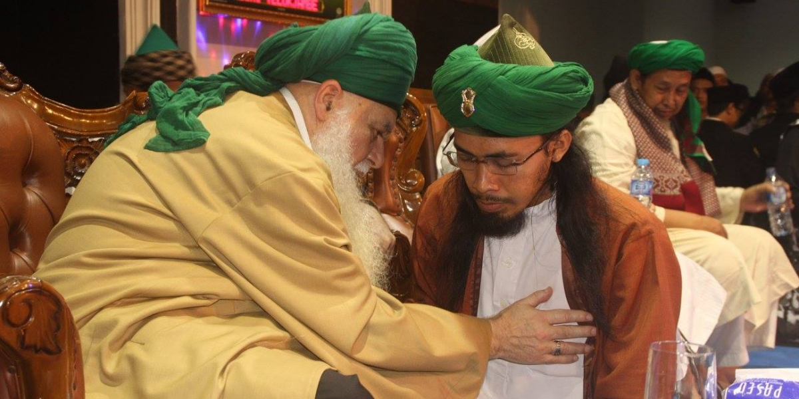

NYAWAKU UNTUK MU SAUDARAKU YA SAYYID

Saat berkumandang
Yaa Nabi Salam ‘Alaika
Yaa Rosul Salam ‘Alaika
Yaa Habib Salam ‘Alaika
Salawatullah ‘Alaika
Sayyid Alwi bersama Prabu Tribuana di Sigong
Seluruh sendi, panca Indra dan Cakra bergetar hebat. Diantara zikir yang sedang aku lakukan semakin kencang dibacakan dalam kalbu.
Tak terhitung jumlah jama’ah semuanya berkidung memuja keagungan Allah dan kekagumannya terhadap pemimpin nya yaitu Rosululloh.
Disebelah ku bersemangat menuntun alunan sallawat para jamaah, yaitu Sayyid Seif Alwi didampingi para kiyai, ulama, salah satunya Ustadz Muhyidin Alawiyah, disekitar kami puluhan Laskar Agung Macan Ali Kesultanan Cirebon, Pagar Nusa dan Banser siap siaga mengawal acara Tabligh dan Sholawatan di Desa Sigong, Kec. Lemah Abang Kab. Cirebon.
Sebelum diakhiri dengan pembaiatan, sang Sayyid Seif Alwi dalam tausiyahnya mengingatkan kita untuk bersujud dan menyembah ALLAH dan mengikuti ajaran pemimpin Utama ummat Islam, yaitu Rosululloh Muhammad SAW. Tidak ada lagi pemimpin besar Islam selain beliau. Dimana Rosululloh mengajarkan cinta kasih, adab, adat, santun serta tata Krama dalam ber- habluminannas terhadap semua mahkluk di bumi.
Subhanallah …….
Sungguh indah, sejuk dan damai sekali amanat amanat sang Musafir Syiar ini terhadap jamaah yang menyesaki lokasi tabligh tersebut.
Aku melirik dan bergumam dalam hati berdoa :
Yaa Allah sang pencipta, beri aku kekuatan lahir batin, dalam sisa umurku ini aku sudah berjanji akan menjaga Ulama yang baik, santun, lungguh, pengayom, pelindung, penjaga ummat yang konon itulah sifat Rosululloh.
Ya Allah di sebelahku ada hambaMu yang berjuang meneruskan ajaran Rosululloh, laku lampah para wali, Auliyah dan leluhur dalam syiar Islam yang mumpuni kalbu, ia saudaraku sang Sayyid Seif Alwi. Darah dagingku dan dia adalah sama. Maka apabila ada orang yang akan menyentuhnya maupun keluarganya dan berbuat jahat, akan aku balas dengan nyawa sekalipun.
Insya Allah …..
Sigong 11 November 2018
Sebuah tulisan dari : Prabu Tribuwana Tunggadewa dalam akun Facebooknya
Penyesuaian oleh : MMC
Ahbaburrosul Indonesia 2021